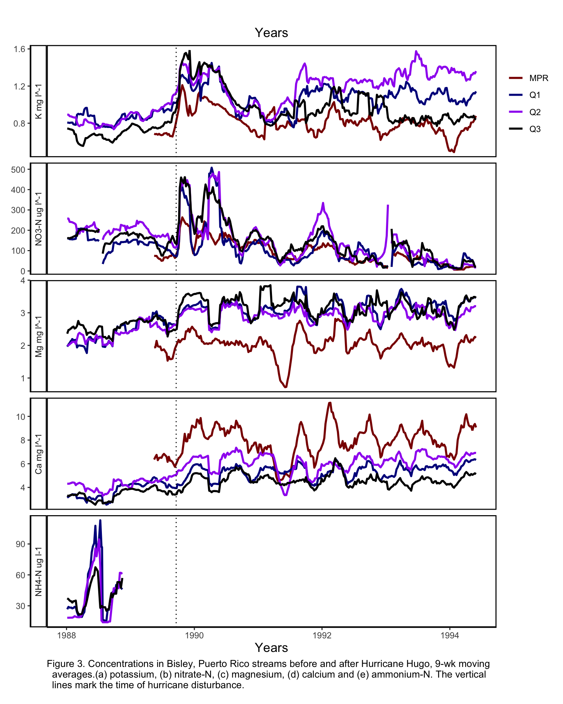

library(tidyverse)
library(janitor)
library(here)
source(here("R", "moving_average.R")) # call a function you will be using
source(here("R", "chemical_labeller.R")) # call a function you will be using Final Project Quarto Analysis
Load in necessary packages
Background
This analysis plots the chemical concentration of samples taken from various stream water sites in the Luquillo Mountains, Puerto Rico.
It calculates the 9 week moving average for every chemical concentration and plots it across time. From this plot, the effects of Hurricane Hugo on stream chemical concentrations can be observed.
Data
Chemical concentration data comes from the following Bisley stream water samples sites, Quebrada Cuenca site 1, 2, and 3 (q1, q2, q3) and Puente Roto Mameyes (PMR). The column names have been cleaned, the site tables have been joined, and the dates filtered for the desired date range.
Read in RDS file produced in a seperate script
Code
# Source an intermediate file containing the cleaned and wrangled data frame.
joined_sites <- readRDS(here("outputs", "joined_sites.rds"))Methods
The following code calculates the moving average for each data point, which corresponds to the chemical concentration of a specific site at a specific time.
It uses a 9 week window for every data point. Meaning that for each data point, it obtains all concentration values that were collected 4.5 weeks before that data point and all those after that were collected after that point, but not extending past 4.5 weeks.
The concentration values within this window is averaged out for every data point. Then, this scalar is saved into same row as the initial data point. A separate column called “chemical name”_moving_avg is added for each individual chemical.
Add moving average column for all chemicals
Code
# Create potassium moving average column
joined_sites_avg <- joined_sites %>%
group_by(sample_id) %>%
mutate(k_moving_avg = sapply(
sample_date,
moving_average,
dates = sample_date,
conc = k,
win_size_wks = 9
)) %>%
ungroup()
# Create dissolved nitrogen moving average column
joined_sites_avg <- joined_sites_avg %>%
group_by(sample_id) %>%
mutate(no3_n_moving_avg = sapply(
sample_date,
moving_average,
dates = sample_date,
conc = no3_n,
win_size_wks = 9
)) %>%
ungroup()
# Create magnesium moving average column
joined_sites_avg <- joined_sites_avg %>%
group_by(sample_id) %>%
mutate(mg_moving_avg = sapply(
sample_date,
moving_average,
dates = sample_date,
conc = mg,
win_size_wks = 9
)) %>%
ungroup()
# Create calcium moving average column
joined_sites_avg <- joined_sites_avg %>%
group_by(sample_id) %>%
mutate(ca_moving_avg = sapply(
sample_date,
moving_average,
dates = sample_date,
conc = ca,
win_size_wks = 9
)) %>%
ungroup()
# Create ammonium nitrogen moving average column
joined_sites_avg <- joined_sites_avg %>%
group_by(sample_id) %>%
mutate(nh4_n_moving_avg = sapply(
sample_date,
moving_average,
dates = sample_date,
conc = nh4_n,
win_size_wks = 9
)) %>%
ungroup()This code uses pivot longer to place all chemical types into their own column called “chemical” and their concentration average in a separate column called “concentration_average”.
This step will allow the use of facet_grid which relies on a single column to create individual panels.
Pivot longer chemical concentration columns
Code
# Pivot longer
long_sites_avg <- joined_sites_avg %>%
pivot_longer(k_moving_avg:nh4_n_moving_avg,
names_to = "chemical",
values_to = "concentration_average")This code produces a plot with separate panels for each chemical. Each panel contains the chemical concentration over time with distinct lines for each site.
Plot chemical concentrations across time
Code
# Create a list which contains the replacement names for the previous facet grid x axis strip labels.
chemical_names <- list(
'k_moving_avg'="K mg l^-1",
'no3_n_moving_avg'="NO3-N ug l^-1",
'mg_moving_avg'="Mg mg l^-1",
'ca_moving_avg'="Ca mg l^-1",
'nh4_n_moving_avg' = "NH4-N ug l-1"
)
# Plot
chem_site_plot <- long_sites_avg %>%
ggplot(aes(x = sample_date, y = concentration_average, color = sample_id)) +
geom_line(size = 1) +
scale_color_discrete(labels = c("PMR", "BQ1","BQ2", "BQ3")) + # change labels in legend
scale_color_manual(values=c("darkred", "darkblue", "purple", "black")) +
facet_grid(rows = vars(factor(chemical,
levels=c("k_moving_avg",
"no3_n_moving_avg",
"mg_moving_avg",
"ca_moving_avg",
"nh4_n_moving_avg"))),
scales = "free",
switch = "y", labeller=chemical_labeller) + # apply labeller function to replace the plots x axis title.
theme_classic() +
theme(legend.position = c(1.07, 0.9), # adjust plot sections
plot.margin = unit(c(1,2.4,0.5,0.4), "cm"),
axis.title.y = element_blank(),
panel.border = element_rect(color = "black", fill = NA, size = 1),
plot.title = element_text(hjust = 0.5),
axis.title.x = element_text(size = 13),
legend.title=element_blank(),
plot.caption = element_text(size = 10, hjust = 0)
) +
xlab("Years") +
labs(title = "Years", caption = "Figure 3. Concentrations in Bisley, Puerto Rico streams before and after Hurricane Hugo, 9-wk moving
averages.(a) potassium, (b) nitrate-N, (c) magnesium, (d) calcium and (e) ammonium-N. The vertical
lines mark the time of hurricane disturbance.") +
geom_vline(xintercept = as.Date("1989-09-19"), linetype = 3) # insert vertical line indicating the occurance of hurricane hugo
ggsave("chem_site_plot.png", path = here("figs"), width = 8, height = 10)Results
This plot shows the chemical concentrations of different chemicals at different sites across time.
The occurrence of Hurricane Hugo is visualized with a horizontal line, it demonstrates how chemical concentrations changed after it occurred.
